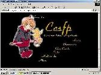
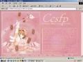

Version: 1.0
A simple, black layout this was.^_^This is the first CCSFP layout, back when this site was originally going to be a general Card Captor Sakura site. It was basically all black, with gold writings. I didn't like it much, so as soon as I had time for a new layout, this one was taken down. Even though I threw this layout together in like 15 minutes, it didn't turn out so bad lol.

Version: 2.0
This layout was very cute and very PINK. It was the last layout of CCSFP before I changed the whole site to a Mirror Shrine. That image of Sakura was so kawaii and I just had to use it. The links were at the bottom and I didn't use frames, although that should be the likely choice. It stayed for a long time basically because I was working on my Mirror Site underneath and didn't want to put my site on hiatus.

Version: 3.0
This was one of my best layouts at the time. I spent my record breaking 2 hours on it, the first time ever back then. It had 13-ish layers, a bundle of other effects, and it was the first time I experimented with dhtml. It stayed for quite a while, partly because I was busy with real life, and partly because I really enjoyed the layout.

Version: 4.0
This layout was mainly created because the previous one lasted for more than 2 years. I felt that it was time for a change, so voila. The image featured is one of my favorites. The Mirror looks absolutely adorable and beautiful.
Terms & Conditions | aiNET